InnerShadow QML Type
Generates a colorized and blurred shadow inside the source. More...
| Import Statement: | import Qt5Compat.GraphicalEffects |
| Since: | QtGraphicalEffects 1.0 |
| Inherits: |
Properties
- cached : bool
- color : color
- fast : bool
- horizontalOffset : real
- radius : real
- samples : int
- source : variant
- spread : real
- verticalOffset : real
Detailed Description
By default the effect produces a high quality shadow image, thus the rendering speed of the shadow might not be the highest possible. The rendering speed is reduced especially if the shadow edges are heavily softened. For use cases that require faster rendering speed and for which the highest possible visual quality is not necessary, property fast can be set to true.
| Source | Effect applied |
|---|---|
| 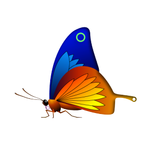 |

Note: This effect is available when running with OpenGL.
Example
The following example shows how to apply the effect.
import QtQuick import Qt5Compat.GraphicalEffects Item { width: 300 height: 300 Rectangle { anchors.fill: parent } Image { id: butterfly source: "images/butterfly.png" sourceSize: Qt.size(parent.width, parent.height) smooth: true visible: false } InnerShadow { anchors.fill: butterfly radius: 8.0 samples: 16 horizontalOffset: -3 verticalOffset: 3 color: "#b0000000" source: butterfly } }
Property Documentation
cached : bool |
This property allows the effect output pixels to be cached in order to improve the rendering performance. Every time the source or effect properties are changed, the pixels in the cache must be updated. Memory consumption is increased, because an extra buffer of memory is required for storing the effect output.
It is recommended to disable the cache when the source or the effect properties are animated.
By default, the property is set to false.
color : color |
This property defines the RGBA color value which is used for the shadow.
By default, the property is set to "black".
| Output examples with different color values | ||
|---|---|---|
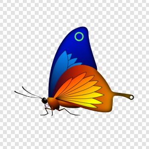 | 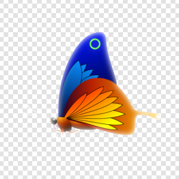 | 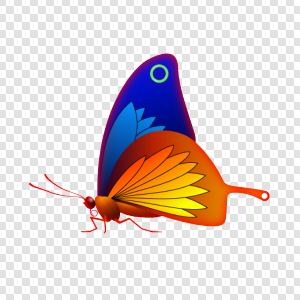 |
| color: #000000 | color: #ffffff | color: #ff0000 |
| radius: 16 | radius: 16 | radius: 16 |
| samples: 24 | samples: 24 | samples: 24 |
| horizontalOffset: 0 | horizontalOffset: 0 | horizontalOffset: 0 |
| verticalOffset: 0 | verticalOffset: 0 | verticalOffset: 0 |
| spread: 0.2 | spread: 0.2 | spread: 0.2 |
fast : bool |
This property selects the blurring algorithm that is used to produce the softness for the effect. Setting this to true enables fast algorithm, setting value to false produces higher quality result.
By default, the property is set to false.
| Output examples with different fast values | ||
|---|---|---|
| fast: false | fast: true | |
| radius: 16 | radius: 16 | |
| samples: 24 | samples: 24 | |
| color: #000000 | color: #000000 | |
| horizontalOffset: 0 | horizontalOffset: 0 | |
| verticalOffset: 0 | verticalOffset: 0 | |
| spread: 0.2 | spread: 0.2 |
horizontalOffset : real |
HorizontalOffset and verticalOffset properties define the offset for the rendered shadow compared to the InnerShadow item position. Often, the InnerShadow item is anchored so that it fills the source element. In this case, if the HorizontalOffset and verticalOffset properties are set to 0, the shadow is rendered fully inside the source item. By changing the offset properties, the shadow can be positioned relatively to the source item.
The values range from -inf to inf. By default, the properties are set to 0.
| Output examples with different horizontalOffset values | ||
|---|---|---|
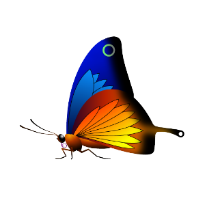 |
| 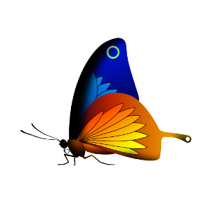 |
| horizontalOffset: -20 | horizontalOffset: 0 | horizontalOffset: 20 |
| radius: 16 | radius: 16 | radius: 16 |
| samples: 24 | samples: 24 | samples: 24 |
| color: #000000 | color: #000000 | color: #000000 |
| verticalOffset: 0 | verticalOffset: 0 | verticalOffset: 0 |
| spread: 0 | spread: 0 | spread: 0 |

radius : real |
Radius defines the softness of the shadow. A larger radius causes the edges of the shadow to appear more blurry.
Depending on the radius value, value of the samples should be set to sufficiently large to ensure the visual quality.
The value ranges from 0.0 (no blur) to inf. By default, the property is set to 0.0 (no blur).
| Output examples with different radius values | ||
|---|---|---|
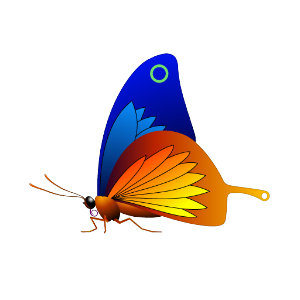 | 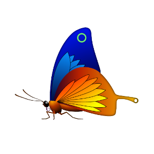 | 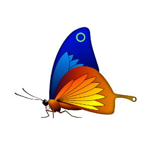 |
| radius: 0 | radius: 6 | radius: 12 |
| samples: 24 | samples: 24 | samples: 24 |
| color: #000000 | color: #000000 | color: #000000 |
| horizontalOffset: 0 | horizontalOffset: 0 | horizontalOffset: 0 |
| verticalOffset: 0 | verticalOffset: 0 | verticalOffset: 0 |
| spread: 0 | spread: 0 | spread: 0 |
samples : int |
This property defines how many samples are taken per pixel when edge softening blur calculation is done. Larger value produces better quality, but is slower to render.
Ideally, this value should be twice as large as the highest required radius value, for example, if the radius is animated between 0.0 and 4.0, samples should be set to 8.
The value ranges from 0 to 32. By default, the property is set to 0.
This property is not intended to be animated. Changing this property may cause the underlying OpenGL shaders to be recompiled.
When fast property is set to true, this property has no effect.
source : variant |
This property defines the source item that is going to be used as the source for the generated shadow.
Note: It is not supported to let the effect include itself, for instance by setting source to the effect's parent.
spread : real |
This property defines how large part of the shadow color is strengthened near the source edges.
The value ranges from 0.0 to 1.0. By default, the property is set to 0.5.
| Output examples with different spread values | ||
|---|---|---|
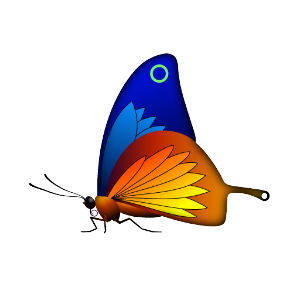 | 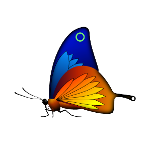 | |
| spread: 0.0 | spread: 0.3 | spread: 0.5 |
| radius: 16 | radius: 16 | radius: 16 |
| samples: 24 | samples: 24 | samples: 24 |
| color: #000000 | color: #000000 | color: #000000 |
| horizontalOffset: 0 | horizontalOffset: 0 | horizontalOffset: 0 |
| verticalOffset: 0 | verticalOffset: 0 | verticalOffset: 0 |
verticalOffset : real |
HorizontalOffset and verticalOffset properties define the offset for the rendered shadow compared to the InnerShadow item position. Often, the InnerShadow item is anchored so that it fills the source element. In this case, if the HorizontalOffset and verticalOffset properties are set to 0, the shadow is rendered fully inside the source item. By changing the offset properties, the shadow can be positioned relatively to the source item.
The values range from -inf to inf. By default, the properties are set to 0.
| Output examples with different horizontalOffset values | ||
|---|---|---|
| ||
| horizontalOffset: -20 | horizontalOffset: 0 | horizontalOffset: 20 |
| radius: 16 | radius: 16 | radius: 16 |
| samples: 24 | samples: 24 | samples: 24 |
| color: #000000 | color: #000000 | color: #000000 |
| verticalOffset: 0 | verticalOffset: 0 | verticalOffset: 0 |
| spread: 0 | spread: 0 | spread: 0 |